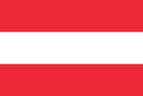

Австрия
Карта Австрии
Галерея изображений
А́встрия[7] (нем. Österreich МФА: [ˈøːstɐˌʁaɪç]о файле), полная официальная форма — Австри́йская Респу́блика[8] (Republik Österreich МФА: [repuˈbliːk ˈʔøːstɐʁaɪç]о файле) — государство в Центральной Европе. Население составляет 8,858 млн человек (2019), площадь — 83 879 км²[9]. Занимает 98-е место в мире по численности населения и 113-е по территории. На севере граничит с Чехией (362 км), на северо-востоке — со Словакией (91 км), на востоке — с Венгрией (366 км), на юге — со Словенией (330 км) и Италией (430 км), на западе — с Лихтенштейном (35 км) и Швейцарией (164 км), на северо-западе — с Германией (784 км). Австрия — многонациональное государство с широким этнокультурным, религиозным, расовым и национальным многообразием. Около 74 % населения — католики. Государственный язык — немецкий. Федеративное государство, парламентская республика. С 3 марта 2025 года федеральным канцлером является Кристиан Штокер. Столица — Вена. Подразделяется на 9 федеральных земель: Бургенланд, Вена, Верхняя Австрия, Каринтия, Зальцбург, Нижняя Австрия, Тироль, Штирия, Форарльберг. Постиндустриальная страна с динамично развивающейся экономикой. Объём ВВП по паритету покупательной способности за 2017 год составил 441 млрд долларов США (около 50 000 долларов на душу населения). Член Организации Объединённых Наций, Европейского союза. В 1955 году провозгласила постоянный нейтралитет и неприсоединение к каким-либо военным блокам. Входит в Шенгенскую зону и Еврозону, то есть денежная единица — евро.